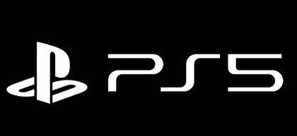

Para cualquiera, PlayStation está interesada en dar valor a su marca con su exclusividad y entorno online con elementos específicos, para distinguirla de los elementos que ya existen en el mercado, esto no es un secreto para nadie. La compra del famoso torneo de juegos de lucha EVO y la información de patentes relacionada con escenas competitivas en todos los niveles indican que Sony construirá una plataforma digital para él en algún momento.
